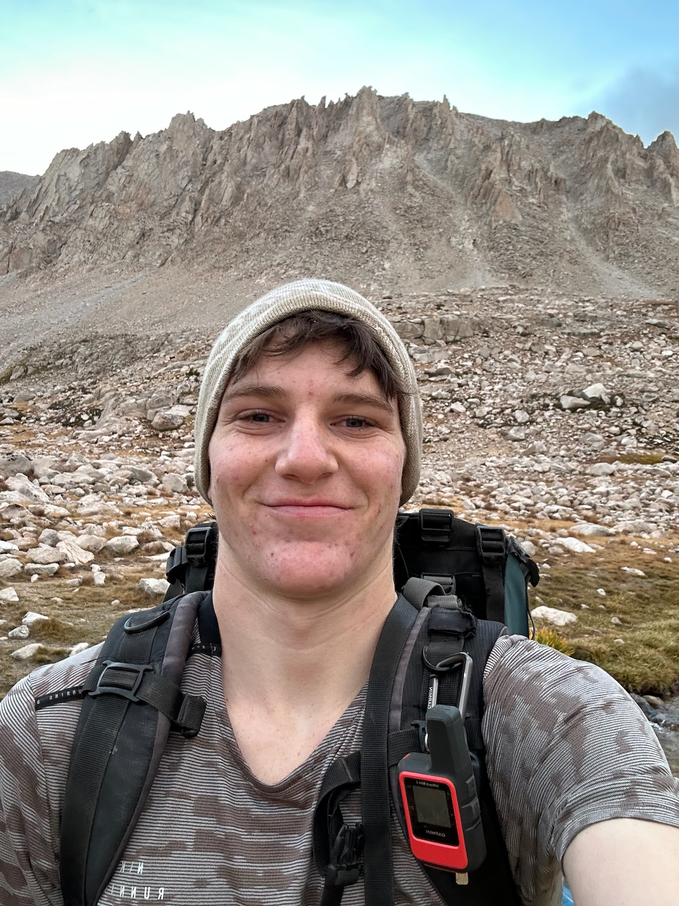
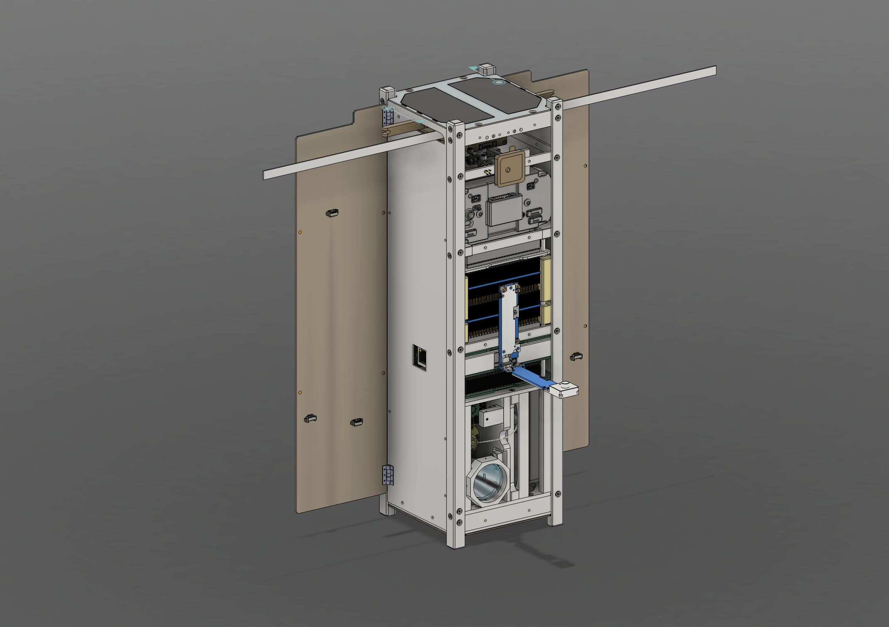
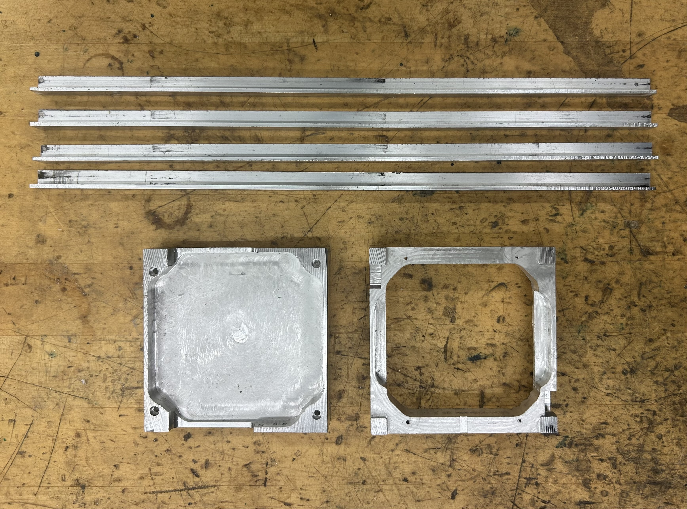
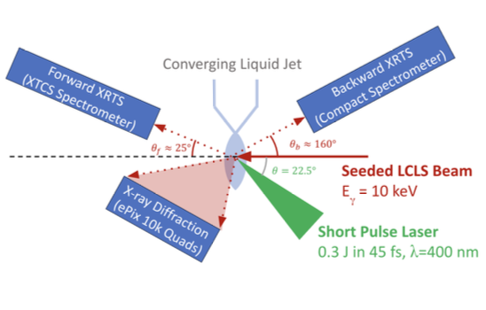

Hi, I'm Asher Goodman. I study physics and math at UChicago, where I run varsity track and XC while pursuing my passion for engineering and space systems.
I currently work as a Structures Engineer on the Pulse-A CubeSat team, where I design, model, and test spaceflight structures and components.
I am especially interested in mechanical and structural systems where physical and mathematical insight inform engineering decisions.
When I am not working, I'm usually running. I compete in cross country, and race the 1500, 3k, and 5k during track season. I also love the outdoors! Outside of Chicago, I take every opportunity to go backpacking, rock climbing, and mountaineering.

Structural design and testing of PULSE-A CubeSat against launch and space environment constraints.
View in Depth →
Used CNC and other machine tools to construct satellite frame components.
View in Depth →
Analyzed experimental results, troubleshot detector issues, and delved into theoretical literature at SLAC National Accelerator Lab.
View in Depth →